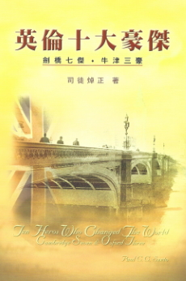

英倫十大豪傑
- 時代挑戰 (代序) – 戴紹曾
- 序
- 鳴謝
- 轟天動地的劍橋七傑 Cambridge Seven
- 何斯德 Dixon Edward Hoste
- 施達德 Charles Thomas Studd
- 蓋士利 William Wharton Cassels
- 司米德 Stanley Peregrine Smith
- 章必成 Montagu Harry Proctor Beauchamp
- 杜明德 Arthur Twistle Polhill-Turner
- 杜西瑟 Cecil Henry Polhill-Turner
- 移風易俗的牛津三豪 Oxford Three
- 亞次保 Roderic Thomas Archibald
- 紀亞納 William Henry Temple Gairdner
- 威爾奇 Paget Wilkes